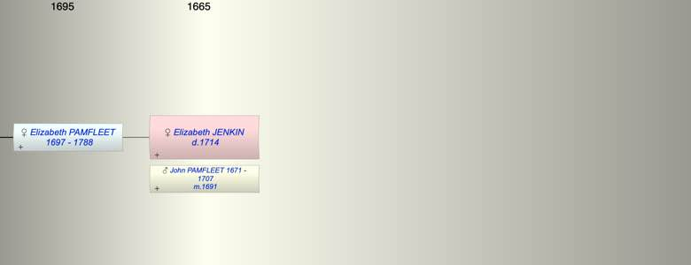

| [Index] |
| Elizabeth JENKIN ( - 1714) |
|  |
| m. 04 Jun 1691 John PAMFLEET (1671 - 1707) at Boughton under Blean |
| d. 04 Feb 1714 at St Laurence |
| Children (1): |
| Elizabeth PAMFLEET (1697 - 1788) |
| Events in Elizabeth JENKIN ( - 1714)'s life | |||||
| Date | Age | Event | Place | Notes | Src |
| 04 Jun 1691 | Married John PAMFLEET (aged 20) | Boughton under Blean | ex FS | ||
| 1697 | Birth of daughter Elizabeth PAMFLEET | St Laurence | Note 1 | ||
| 23 Apr 1707 | Death of husband John PAMFLEET (aged 36) | St Laurence | Note 2 | ||
| 04 Feb 1714 | Elizabeth JENKIN died | St Laurence | ex MI | ||
| Note 1: bap St Laurence 16 Jul 1697 dau of John and Elizabeth ex FS |
| Note 2: aged 36 ex MI of St Laurence, also his wife Eliz. dau of Will Jenken of MInster |
| Personal Notes: |
| Probably bap Minster 22 May 1673 dau of William and Elizabeth. |
| Created on a Mac™ using iFamily for Mac™ on 8 Oct 2023 |